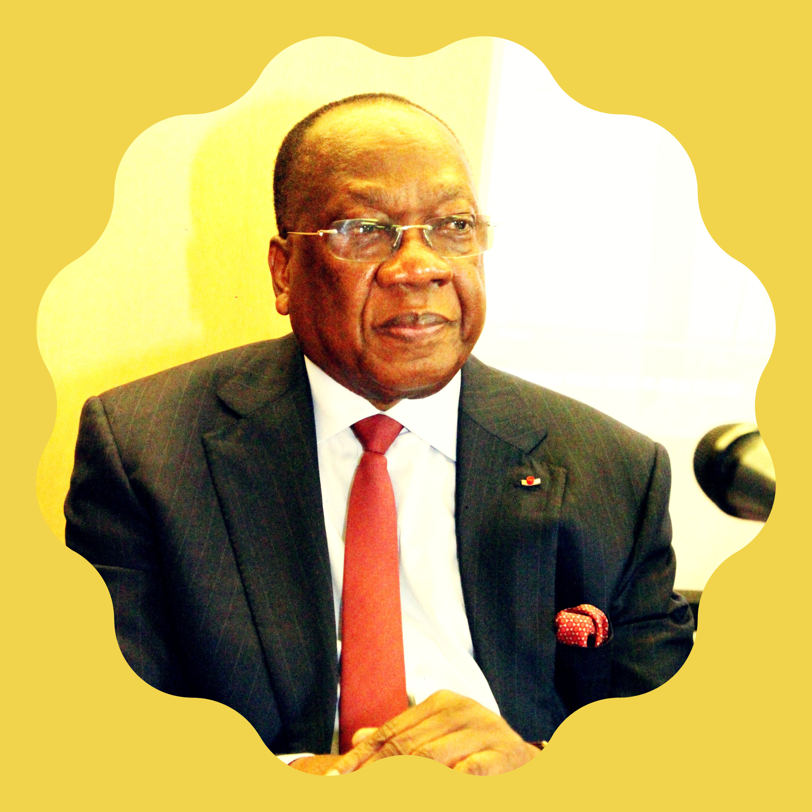

Conférence économique à Nzérékoré

L'UNPG est fière d'organiser une conférence majeure sur le développement économique de la région forestière, avec un accent particulier sur l'agriculture durable et l'industrie locale. Cette conférence réunira des experts, des entrepreneurs locaux et des représentants du gouvernement pour discuter des opportunités et des défis auxquels fait face la région de Nzérékoré.
Nous aborderons des sujets cruciaux tels que la modernisation des techniques agricoles, la transformation locale des produits agricoles, le développement de l'industrie forestière durable, et les moyens d'attirer des investissements dans la région.
Programme de la journée
09:00 - 09:30
Accueil et enregistrement des participants
09:30 - 10:00
Discours d'ouverture par M. François Louceny Fall
10:00 - 11:30
Panel sur l'agriculture durable en Guinée forestière
11:30 - 13:00
Présentation sur les opportunités d'industrialisation locale
13:00 - 14:30
Pause déjeuner et networking
14:30 - 16:00
Ateliers thématiques (agriculture, industrie, investissements)
16:00 - 17:00
Session de questions-réponses avec les intervenants
17:00 - 17:30
Conclusion et prochaines étapes
Nos intervenants

François Louceny Fall
Président de l'UNPG

Aïssatou Bah
Experte en agriculture durable
Mamadou Sylla
Entrepreneur local

Equipe
Spécialiste en développement économique